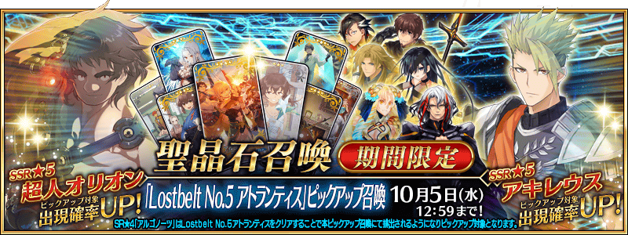
◆『「Lostbelt No.5 亞特蘭提斯」Pick Up召喚』期間◆
期間:2022年9月28日(三) 17:00～10月5日(三) 11:59
從「Road to 7 [Lostbelt No.5 亞特蘭提斯]」關聯從者之中，舉辦包含期間限定從者「★5(SSR)超人俄里翁」8位從者Pick Up的3種召喚！
另外，只限已經通過第2部 第5章「Lostbelt No.5 神代巨神海洋 亞特蘭提斯 擊落神之日」的情況，來自故事限定的概念禮裝「★4(SR)アルゴノーツ」Pick Up！
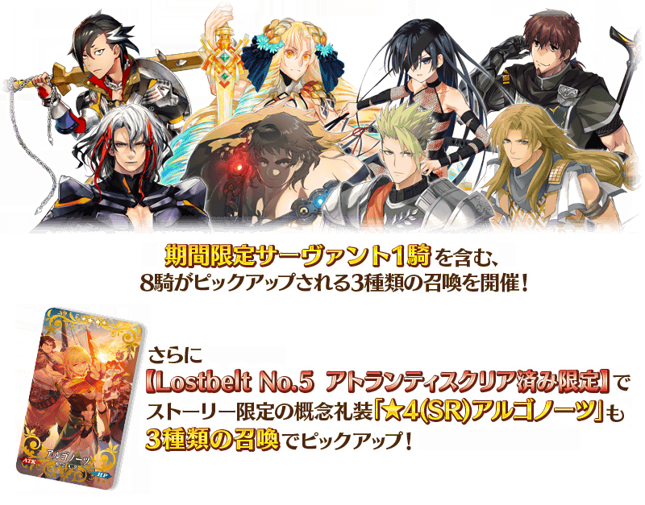
※本召喚中，故事限定的概念禮裝「★4(SR)アルゴノーツ」只限已經通過第2部 第5章「Lostbelt No.5 神代巨神海洋 亞特蘭提斯 擊落神之日」的情況才會被抽出，成為Pick Up對象。
請注意尚未通過第2部 第5章「Lostbelt No.5 神代巨神海洋 亞特蘭提斯 擊落神之日」的情況會是Pick Up對象外，不會從本召喚被抽出。
※本召喚中概念禮裝「★4(SR)アルゴノーツ」做為抽出對象追加後，會變更其他★4(SR)概念禮裝個別的出現機率，但關於「★4(SR)概念禮裝全體的出現機率」不會變更。
詳情請自遊戲內的召喚詳細確認。
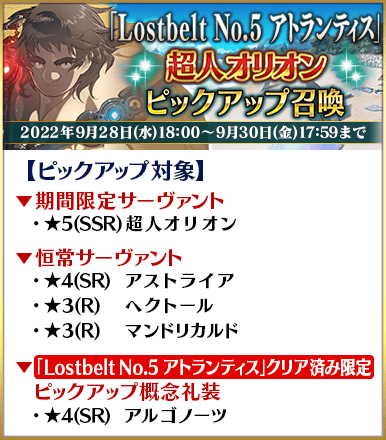
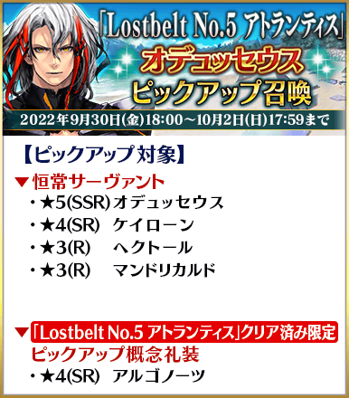
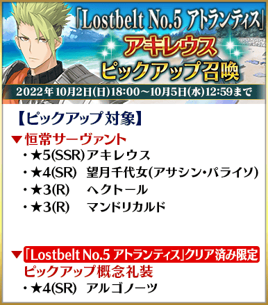
本召喚中，第2部 第5章「Lostbelt No.5 神代巨神海洋 亞特蘭提斯 擊落神之日」的通過前與通過後，1日1次限定的「1次召喚」、「＋1次獎勵召喚」、「確定召喚」的計算及已經施行的「確定召喚」不會重置。
Pick Up期間中，Pick Up對象從者與概念禮裝的出現機率提升！
詳情請在聖晶石召喚畫面左下的召喚詳細確認。
11次召喚中確定1張★4(SR)以上和確定1位★3(R)以上的從者！ ※確定★4(SR)以上包含從者和概念禮裝。 ※在2018年12月31日(二) 23:00以後新配信的主線故事及期間限定活動、一部份關卡、宣傳活動及召喚中，會顯示隱藏真名的對象從者真名。 ※本頁面皆為開發中圖片。會有與實際圖片相異的情況。
◆『「Lostbelt No.5 亞特蘭提斯」Pick Up召喚』時間表◆

※請注意各召喚中獎勵召喚的計算是各自分別計算。 ※請注意各自的Pick Up召喚舉辦期間不同。 ※本召喚中，只有在各召喚Pick Up的從者才是透過「確定召喚」召喚的對象。
◆『「Lostbelt No.5 亞特蘭提斯」Pick Up召喚』的注意◆
本次的召喚是每個召喚內容做為個別召喚舉辦的設定。
每10次召喚進行的「＋1次獎勵召喚」與用有償聖晶石進行的1天1次限定「1次召喚」會變成每個召喚內容分別計算。
【重要】
◆關於「確定召喚」功能◆
・期間限定Pick Up召喚中，在329次以內未召喚到Pick Up對象★5(SSR)從者情況，只限1次可在進行第330次的召喚時「確定召喚」必定1位Pick Up對象★5(SSR)從者。
・在同時間舉辦多個期間限定Pick Up召喚的情況，各召喚分別(每個召喚畫面頁面)計算召喚次數。另外，以每日交替Pick Up召喚的內容切換情況，各自分別計算召喚次數。舉例，每天23:00時間點變更召喚內容的Pick Up召喚情況，請注意在召喚內容變更的時間點會重置召喚次數的計算。
・請注意期間限定Pick Up召喚中滿足以下任何條件的話，在召喚畫面會顯示「Pick Up對象確定召喚已結束。(ピックアップ対象の確定召喚は終了しました。)」，該召喚中「確定召喚」功能變成無效。
・第329次前召喚到Pick Up對象★5(SSR)從者
・在第330次確定召喚到Pick Up對象★5(SSR)從者
・召喚次數在期間限定Pick Up召喚中用有償聖晶石、無償聖晶石、呼符進行召喚時都會計算。目前的召喚履歴可於該召喚畫面內確認。
※每10次召喚進行的「＋1次獎勵召喚」與用有償聖晶石進行的1天1次限定「1次召喚」也在計算的對象。
※每個召喚內容會分開計算「＋1次獎勵召喚」與1日1次限定的「1次召喚」。請注意在變更召喚內容那天的23:00，「＋1次獎勵召喚」和「1次召喚」的計算會被重置。
※透過有償聖晶石1個「1次召喚」的計算，也會在每天3:00重置。
・在進行11次召喚時滿足「確定召喚」功能條件的情況，在施行11次召喚中會確定召喚1位Pick Up對象★5(SSR)從者。屆時，11次召喚中保障的確定1張★4(SR)以上與確定1位★3(R)以上的從者會另外生效。
・期間限定Pick Up召喚結束後，無法繼承召喚次數到別的召喚。
・故事召喚、友情點數召喚為「確定召喚」功能的對象外。
◆關於1天1次限定的有償聖晶石召喚◆
※可以1天1次限定於期間限定召喚用有償聖晶石1個進行「1次召喚」。
※透過有償聖晶石1個的「1次召喚」，每天3:00重置。
※透過有償聖晶石1個的「1次召喚」對應的聖晶石召喚有好幾個的情況，各個召喚中1天各進行1次有償聖晶石1個的「1次召喚」。
※請注意就算進行透過有償聖晶石1個的「1次召喚」，不包含在1次獎勵的計算。
※聖晶石購入時賦予的「附贈(オマケ)」是做為無償聖晶石而不包含在有償聖晶石的個數，請注意別搞錯。另外，持有聖晶石的細項，可從持有道具一覧確認。
◆關於透過召喚獲得從者硬幣◆
在期間限定召喚、故事召喚、友情點數召喚中入手從者時，可獲得該從者的從者硬幣。
◆有關從者的注意◆
※請注意下述的從者只會從成為Pick Up對象的召喚被抽出。
・★5(SSR)超人俄里翁
※下述的從者在Pick Up期間結束後不會追加到故事召喚。
・★5(SSR)超人俄里翁
※下述的從者在Pick Up期間結束後仍會在故事召喚被抽出。
・★5(SSR)阿基里斯
・★5(SSR)奧德修斯
・★4(SR)凱隆
・★4(SR)望月千代女(Assassin・樂園)
・★4(SR)阿斯特蕾亞
・★3(R)赫克特
・★3(R)曼迪卡爾多
※關於隱藏真名尚未判明的從者，透過主線關卡的進行會讓從者及一部份寶具的名稱變化。
◆有關概念禮裝的注意◆
※本召喚中，故事限定的概念禮裝「★4(SR)アルゴノーツ」只限已經通過第2部 第5章「Lostbelt No.5 神代巨神海洋 亞特蘭提斯 擊落神之日」的情況才會被抽出，成為Pick Up對象。
請注意尚未通過第2部 第5章「Lostbelt No.5 神代巨神海洋 亞特蘭提斯 擊落神之日」的情況會是Pick Up對象外，不會從本召喚被抽出。
※本召喚中概念禮裝「★4(SR)アルゴノーツ」為抽出對象追加後，會變更其他★4(SR)概念禮裝個別的出現機率，但關於「★4(SR)概念禮裝全體的出現機率」不會變更。
詳情請自遊戲內的召喚詳細確認。
期間限定從者
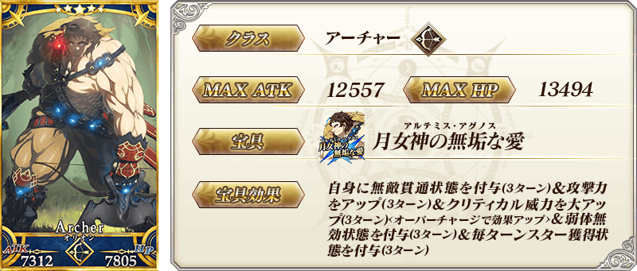 ※上述「★5(SSR)超人俄里翁」的卡面為靈基再臨第1階段。
常駐從者
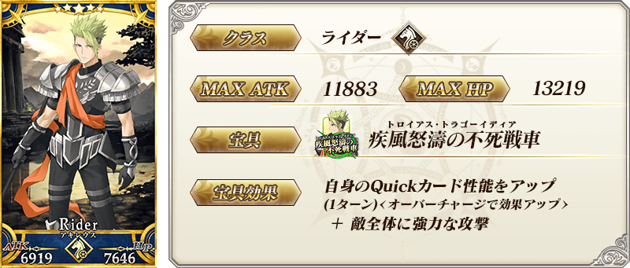 ※上述「★5(SSR)阿基里斯」的卡面為靈基再臨第1階段。
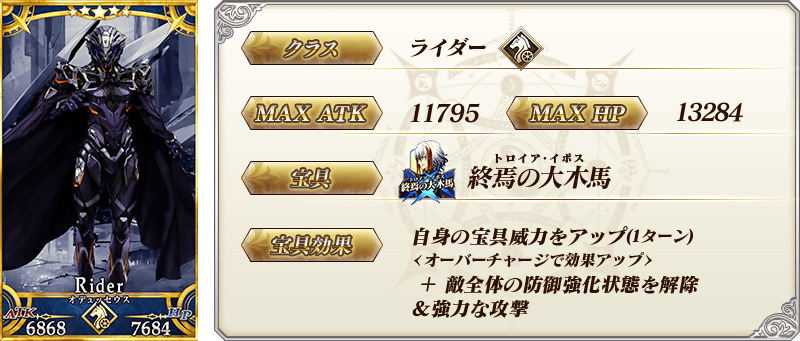 ※上述「★5(SSR)奧德修斯」的卡面為簡易靈衣「Aigis(第二再臨)」開放前的靈基再臨第2階段。 ※開放簡易靈衣「Aigis(第二再臨)」的話，「★5(SSR)奧德修斯」靈基再臨第2階段的卡面與外觀圖片會變成露臉的狀態。上述的卡面會變成簡易靈衣「Aigis(第二再臨)」。
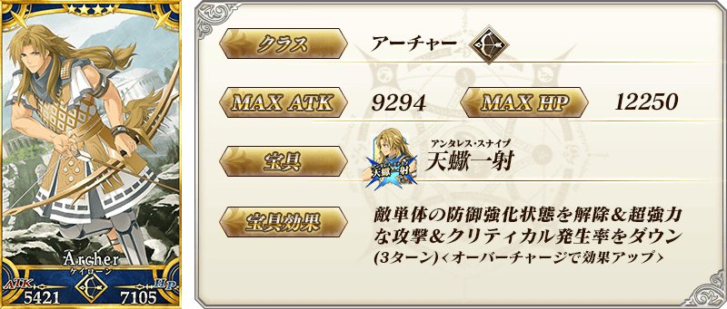 ※上述「★4(SR)凱隆」的卡面為靈基再臨第1階段。
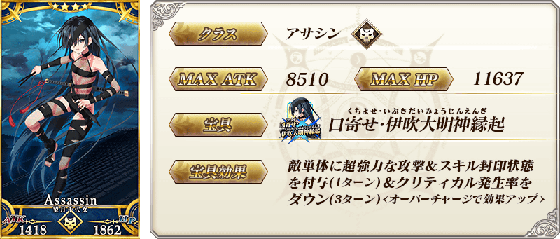
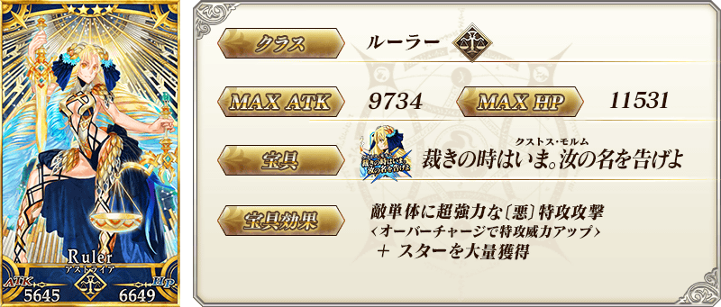 ※上述「★4(SR)阿斯特蕾亞」的卡面為靈基再臨第1階段。
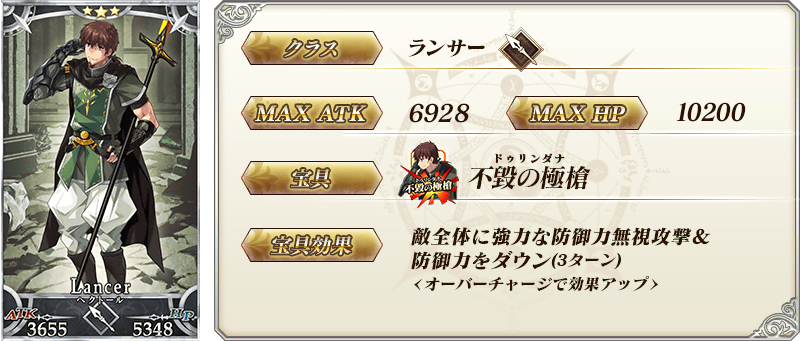 ※上述「★3(R)赫克特」的卡面為靈基再臨第1階段。
 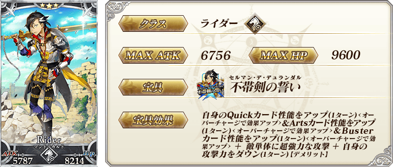
※上述「★3(R)曼迪卡爾多」的卡面は靈基再臨第3階段的も的です。
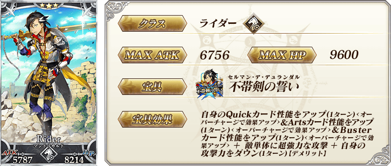
※上述「★3(R)曼迪卡爾多」的卡面は靈基再臨第3階段的も的です。
| 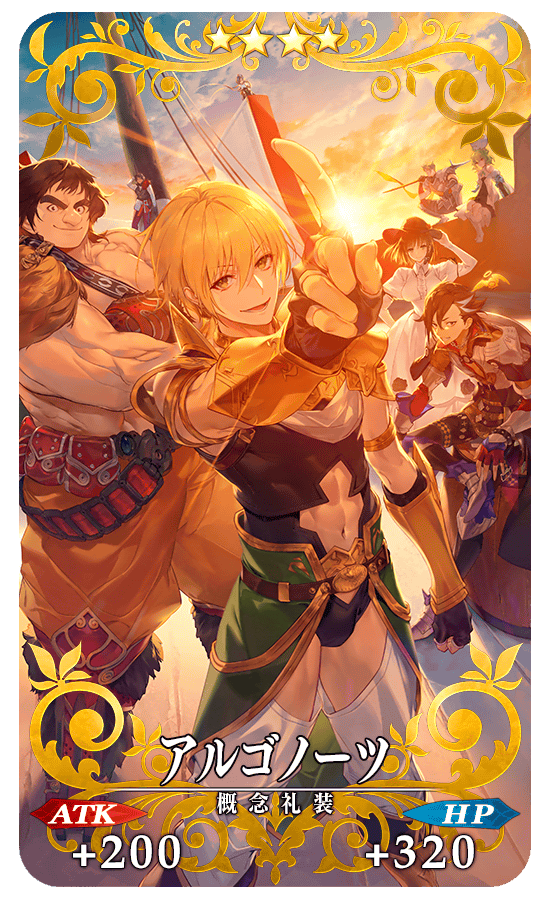 |
★★★★SR
◆最大解放時效果◆ |
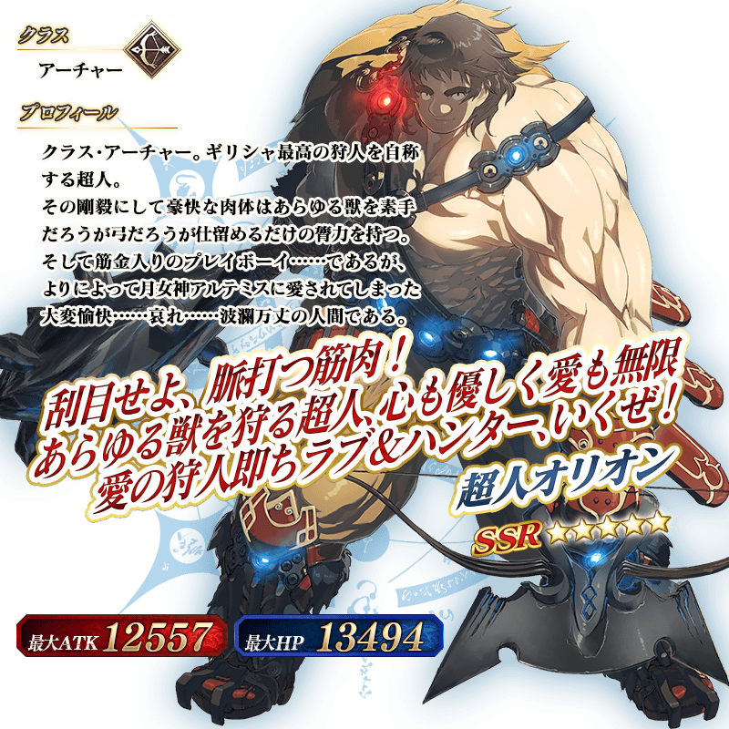 ※上述「★5(SSR)超人俄里翁」的立繪為靈基再臨第1階段。
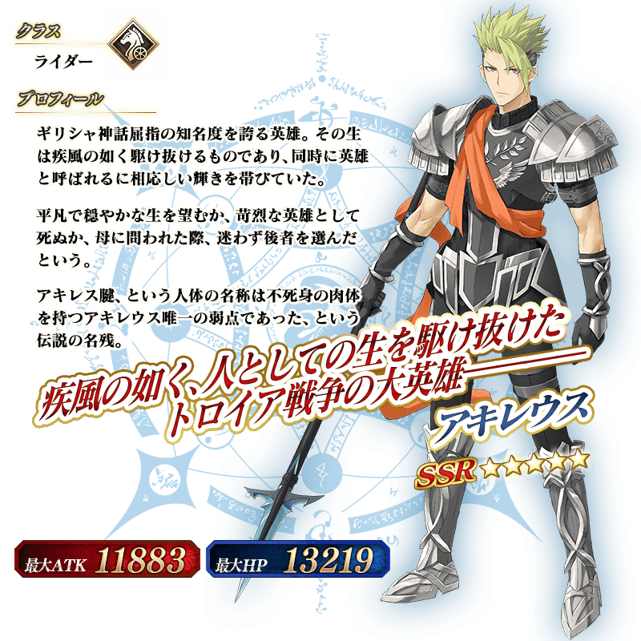 ※上述「★5(SSR)阿基里斯」的立繪為靈基再臨第1階段。
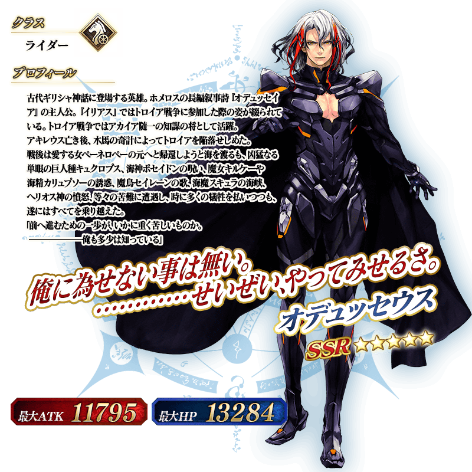 ※上述「★5(SSR)奧德修斯」的立繪為靈基再臨第1階段。
【9月30日(五) 17:00追記】
「★1(C)伊阿宋」「★5(SSR)超人俄里翁」「★5(SSR)奧德修斯」的「幕間物語」，在迦勒底之門永久追加。
能入手聖晶石和從者的技能強化做為關卡通過報酬。
另外，「Road to 7 [Lostbelt No.5 亞特蘭提斯]」的宣傳活動期間中，就算未持有「★1(C)伊阿宋」「★5(SSR)超人俄里翁」「★5(SSR)奧德修斯」也能以期間限定開放「幕間物語」！
由於開放條件也變成期間限定的特別開放條件，務必藉此機會通過「★1(C)伊阿宋」「★5(SSR)超人俄里翁」「★5(SSR)奧德修斯」的「幕間物語」吧！
※超過「Road to 7 [Lostbelt No.5 亞特蘭提斯]」期間限定開放期間的情況，「★1(C)伊阿宋」「★5(SSR)超人俄里翁」的「幕間物語」開放條件會切換成平常的開放條件。 ※關卡通過時的報酬內容沒有變化。
◆「Road to 7 [Lostbelt No.5 亞特蘭提斯]」期間限定開放期間◆
2022年9月28日(三) 17:00～10月5日(三) 11:59
|
◆追加時間◆ ◆「Road to 7 [Lostbelt No.5 亞特蘭提斯]」期間限定開放條件◆
◆平常開放條件◆ ◆關卡通過報酬◆ |
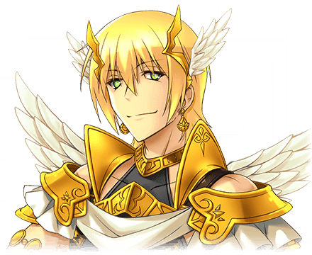 |
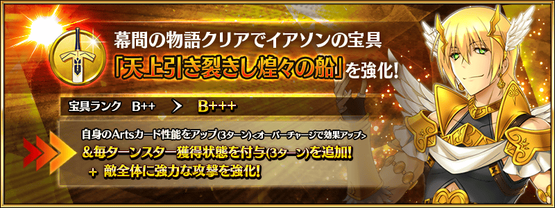
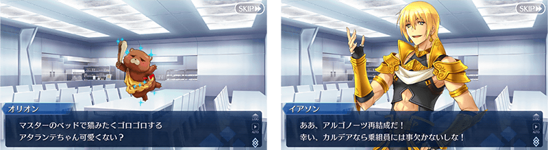
| 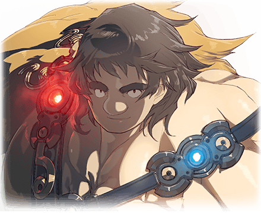 |
◆追加時間◆ ◆「Road to 7 [Lostbelt No.5 亞特蘭提斯]」期間限定開放條件◆
◆平常開放條件◆ ◆關卡通過報酬◆ |
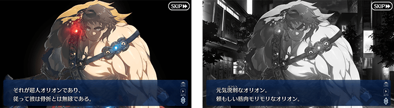
|
◆追加時間◆ ◆「Road to 7 [Lostbelt No.5 亞特蘭提斯]」期間限定開放條件◆
◆平常開放條件◆ ◆關卡通過報酬◆ |
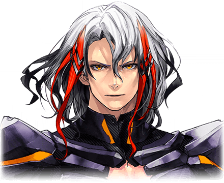 |
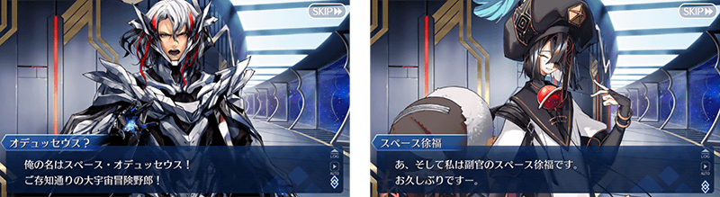
◆「幕間物語」平常開放的注意◆
※未持有「★1(C)伊阿宋」「★5(SSR)超人俄里翁」「★5(SSR)奧德修斯」的情況，關卡不會出現。
※關卡沒有舉辦期限。
※在期間限定開放期間中，已經通過「★1(C)伊阿宋」「★5(SSR)超人俄里翁」「★5(SSR)奧德修斯」幕間物語的情況，無法再度遊玩。
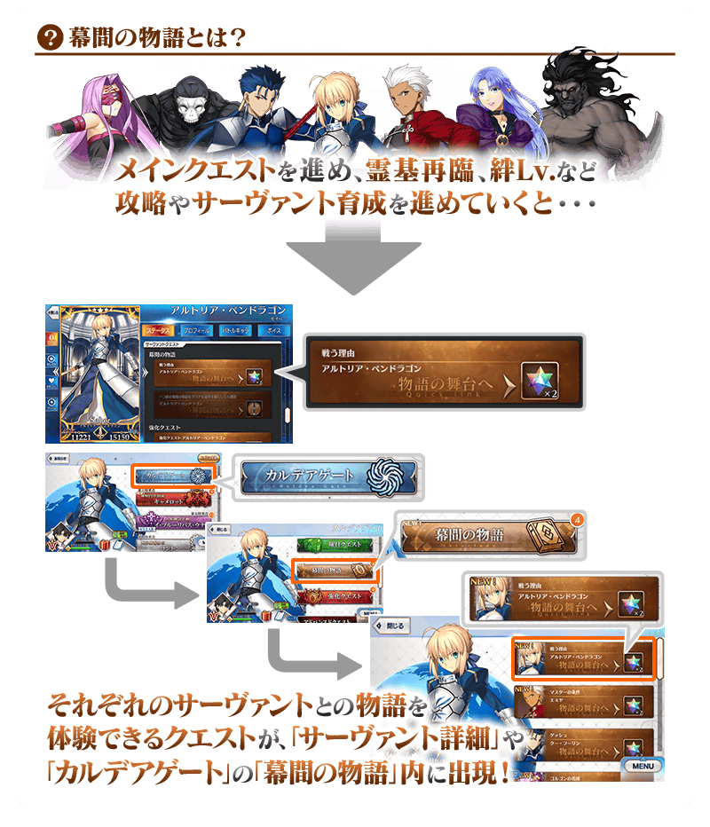
介紹在本召喚Pick Up的6位從者寶具演出！
【★5(SSR)超人俄里翁】
【★5(SSR)阿基里斯】
【★5(SSR)奧德修斯】
【★4(SR)凱隆】
【★4(SR)望月千代女(Assassin・樂園)】
【★4(SR)阿斯特蕾亞】
在2022年舉辦的期間限定活動「BATTLE IN NEWYORK 2022 ～宇宙・奧德修斯對尼古拉・特斯拉～」中登場的「★5(SSR)奧德修斯」的簡易靈衣「Aigis(第二再臨)」開放權與簡易靈衣「Aigis(第三再臨)」開放權，在達文西工房的「靈衣縫製」追加！
用稀有稜鏡2個交換後，可入手上述靈衣開放權。
並且，有通過第2部 第5章「Lostbelt No.5 神代巨神海洋 亞特蘭提斯 擊落神之日」情況即可免費交換簡易靈衣「Aigis(第二再臨)」開放權與簡易靈衣「Aigis(第三再臨)」開放權！
另外，想靈衣開放的話，除了靈衣開放權外再加上必須滿足一些開放條件。
◆追加時間◆
2022年9月28日(三) 17:00～
◆簡易靈衣「Aigis(第二再臨)」開放權的交換條件◆
滿足以下條件的御主才能交換
・通過第2部 第1章「Lostbelt No.1 永久凍土帝國 安娜塔西亞 獸國的皇女」
・簡易靈衣「Aigis(第二再臨)」開放權未入手
◆簡易靈衣「Aigis(第三再臨)」開放權的交換條件◆
滿足以下條件的御主才能交換
・通過第2部 第1章「Lostbelt No.1 永久凍土帝國 安娜塔西亞 獸國的皇女」
・簡易靈衣「Aigis(第三再臨)」開放權未入手
※追加到「靈衣縫製」的簡易靈衣「Aigis(第二再臨)」開放權與簡易靈衣「Aigis(第三再臨)」開放權為永久，沒有交換期限。 ※關於已經取得交換對象靈衣開放權的玩家，無法交換。 ※在用稀有稜鏡2個各自交換簡易靈衣「Aigis(第二再臨)」開放權與簡易靈衣「Aigis(第三再臨)」開放權後達成免費化條件的情況，會返還交換使用的稀有稜鏡2個到禮物箱。
◆靈衣開放權交換免費化的條件◆
滿足以下條件的御主才能免費交換
・通過第2部 第5章「Lostbelt No.5 神代巨神海洋 亞特蘭提斯 擊落神之日」
◆有關靈衣開放權的注意◆
※「★5(SSR)奧德修斯」的靈衣是只變化外觀，語音沒有變化的「簡易靈衣」。
※請注意未持有「★5(SSR)奧德修斯」的情況，可入手靈衣開放權。但無法進行靈衣開放。
※「★5(SSR)奧德修斯」開放簡易靈衣「Aigis(第二再臨)」的話，靈基再臨第2階段的卡面與外觀圖片會變成露臉的狀態。變化前的卡面與外觀圖片會變成簡易靈衣「Aigis(第二再臨)」。
◆追加道具(永久)◆
| 追加道具 | 能交換次數 | 1次交換所需的 稀有稜鏡數 |
|---|---|---|
| 簡易靈衣「Aigis(第二再臨)」開放權 | 1次 |
2個 有通過第2部 第5章「Lostbelt No.5 神代巨神海洋 亞特蘭提斯 擊落神之日」就能免費交換！ |
| 簡易靈衣「Aigis(第三再臨)」開放權 | 1次 |
2個 有通過第2部 第5章「Lostbelt No.5 神代巨神海洋 亞特蘭提斯 擊落神之日」就能免費交換！ |
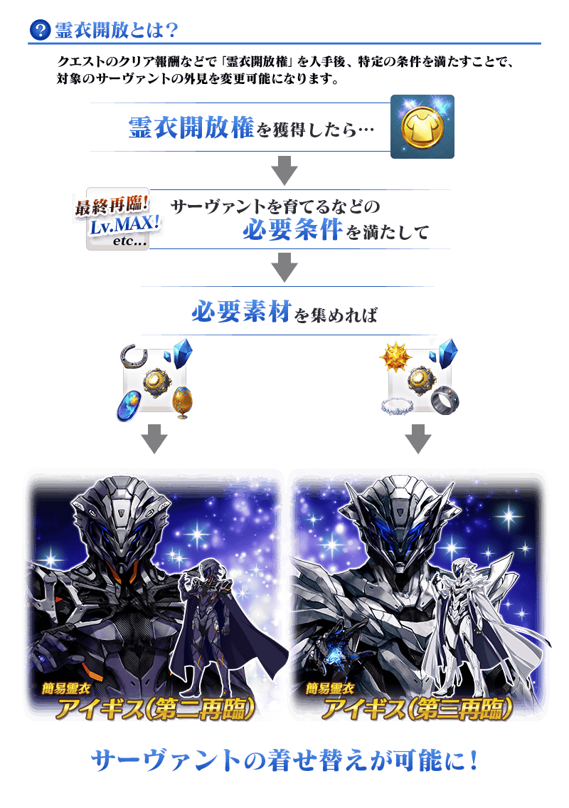

「靈衣開放」是自強化畫面進行。
※「靈衣開放」後會自動切換戰鬥角色和外觀圖片。若想回到「靈衣開放」前的狀態和變成其他再臨階段的情況，可自從者詳細畫面變更。 ※進行「靈衣開放」不會讓職階和能力等有所變化。
介紹奧德修斯的簡易靈衣開放後寶具演出！
介紹各自開放簡易靈衣「Aigis(第二再臨)」「Aigis(第三再臨)」的「★5(SSR)奧德修斯」寶具演出！
強化「★5(SSR)阿基里斯」「★4(SR)望月千代女(Assassin・樂園)」的特別關卡「從者強化關卡」，在迦勒底之門永久追加。
不僅進行對象從者的強化，也可獲得聖晶石做為關卡通過報酬。
※請注意在從者強化關卡沒有文字冒險部份。
◆追加時間◆
2022年9月28日(三) 17:00～
◆開放條件◆
持有的強化對象從者，必須使其最終再臨。
另外關於「★4(SR)望月千代女(Assassin・樂園)」，必須要有真名判明。
※未持有對象從者的話，不會出現關卡。
※關卡沒有舉辦期限。
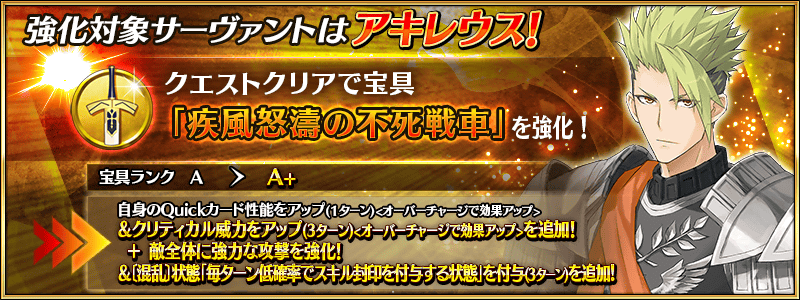
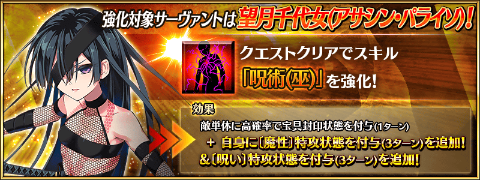
其他還有，「Road to 7 [Lostbelt No.5 亞特蘭提斯]」以期間限定同時舉辦！
並且，下次新活動也預定開幕！
關於詳情，請自下述橫幅確認。
■「Road to 7 [Lostbelt No.5 亞特蘭提斯]」詳細情報

■「下次新活動」詳細情報 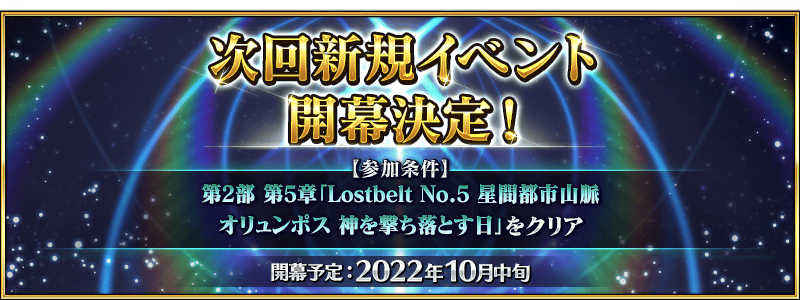